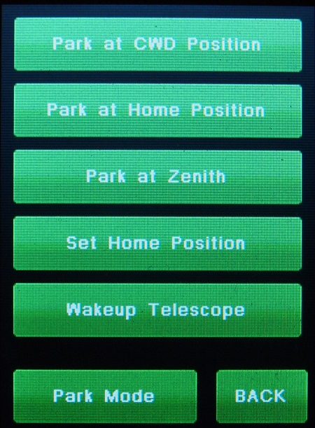

|
Gemini-2 and Gemini-1 Telescope Mount Controllers Website and Tutorials |
| Interactive Hand-Controller Menus - click on green button to Navigate |
|
 The Park Mode button will take you to a menu where you can select one of the three parking modes. |
This menu provides 3 park positions and the capability to stop tracking and start tracking. The Park at CWD (counter weight down) will park the mount where it was positioned when you first turned it on. It assumes this is the CWD position. Parking the mount will stop all tracking once CWD position is reached. Use this startup position for COLD STARTS and WARM STARTS. If you have already built a model, you will need to go to a star, center it, and do a SYNCHRONIZE so that the telescope knows where it is. Once you set a HOME position, you can park at that HOME position and start up by using a WARM RESTART from that position. No SYNCHRONIZE is needed, assuming you have already built a model. To set a home position, move the telescope to the desired Home position. Then hit the Set Home position button. Note: that all park, and home positions are stored internally as relative to the CWD position. You can stop tracking by using the Sleep Telescope button and start tracking again by using the Wakeup Telescope button. Note: the latest version of this function has been changed into one button that changes between Sleep Telescope (left menu) and Wakeup Telescope (right menu). Shown by providing both menus side by side. There is a Park at Zenith button. This parks the telescope facing straight up. This could be used to take flats, for example. |